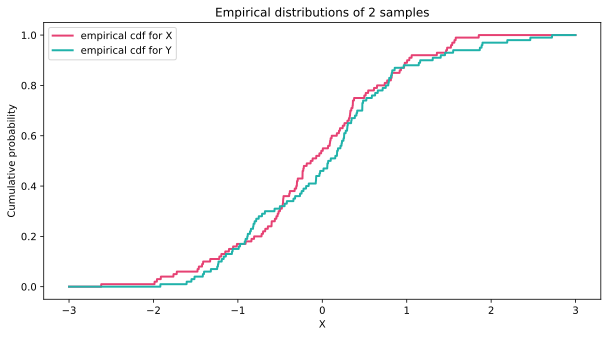
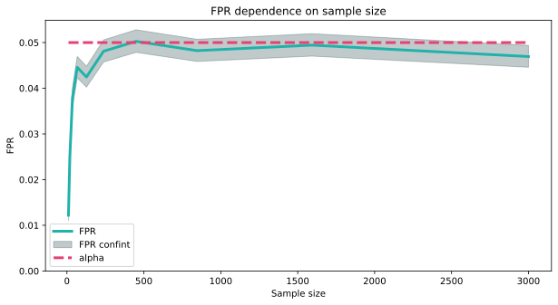
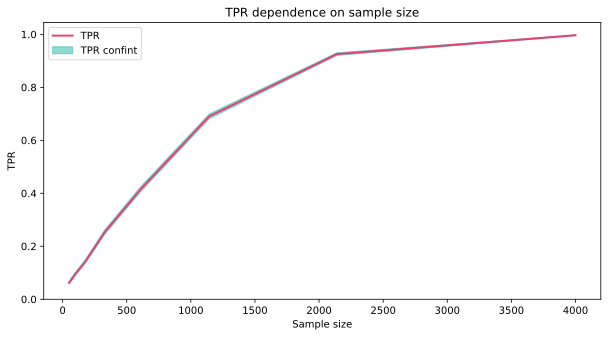
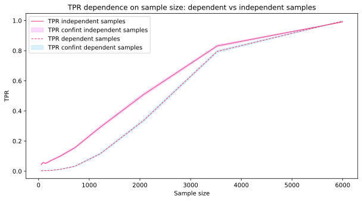

The first sample is the blood pressure of the control group (a set of patients who received placebo). The second sample is the blood pressure of the test group (the set of patients who received the drug). Do you need to check whether the drug administered affects blood pressure?
Kolmogorov-Smirnov test
Let there be 2 sample realizations:
\(x_1, \dots, x_n\): sample realization \(X\) of random variables \(X_1, \dots, X_n\), each distributed as \(\mathcal{P}_X\).
\(y_1, \dots, y_m\): realization of a sample \(Y\) of random variables \(Y_1, \dots, Y_m\), each distributed as \(\mathcal{P}_Y\).
The Kolmogorov-Smirnov test is a non-parametric test that compares the empirical distribution functions of two samples. It is used to determine whether the two samples come from the same distribution.
\(H_0: \mathcal{P}_X = \mathcal{P}_Y\)
\(H_1: \mathcal{P}_X \neq \mathcal{P}_Y\).
Or, analogously, the equality of their distribution functions:
\(H_0: F_X = F_Y\)
\(H_1: F_X \neq F_Y\).
Two types of homogeneity
Let’s compare the two setups of the experiment:
The first sample — control group (a set of patients who were administered placebo). The second sample — test group (a set of patients who were administered the drug). That is, the random variables from which the sample is obtained are independent.
The first sample is the blood pressure of the patients before the drug was administered. The second sample is the blood pressure of the same patients after drug administration. The random variables \(X_i\) and \(Y_i\)cannot be considered independent because they refer to the same person.
Recall
In Kolmogorov’s criterion of agreement, to test that the sample realization \(x_1, x_2, \dots, x_n\) is obtained from the distribution \(\mathcal{P}_0\) with distribution function \(F_0\), we used the statistic \[
D_n = \underset{x \in \mathbb{R}}{\sup} |\widehat{{F_X}_n}(x) - F_0(x)|
\]
This statistic showed the largest modulus of the difference between the empirical and theoretical distribution functions.
where \(\widehat{{F_X}_n}(x) = \frac{1}{n}\sum_i[X_i \leqslant x]\), and \(\widehat{{F_Y}_m}(x) = \frac{1}{m}\sum_i[Y_i \leqslant x]\).
Code
x_axis = numpy.arange(start=-3, stop=3, step=0.001)X = norm().rvs(100)Y = norm().rvs(100)emp_cdf_X = []emp_cdf_Y = []for x in x_axis: cdf_X=sum([int(b <= x) for b in X]) /len(X) emp_cdf_X.append(cdf_X) cdf_Y =sum([int(b <= x) for b in Y]) /len(Y) emp_cdf_Y.append(cdf_Y)pyplot.plot(x_axis, emp_cdf_X, color = red_pink, linestyle ='-', linewidth=2.0, label='empirical cdf for X')pyplot.plot(x_axis, emp_cdf_Y, color = turquoise, linestyle ='-', linewidth=2.0, label='empirical cdf for Y')pyplot.legend(loc='best')pyplot.title("Empirical distributions of 2 samples")pyplot.xlabel("X")pyplot.ylabel("Cumulative probability")pyplot.show()
KS statistic

Conditions
The random variables \(X_1, X_2, \dots, X_n\) are independent and have a common distribution function \(F_X\).
The random variables \(Y_1, Y_2, \dots, Y_m\) are independent and have a common distribution function \(F_Y\).
The distribution functions \(F_X\) and \(F_Y\) are unknown but belong to the set of all continuous distribution functions.
All components of the random vector (\(X_1, \dots, X_n, Y_1, \dots, Y_m\)) are independent.
For small \(n\) and \(m\), the test is correct, but has an underestimated \(\it{\text{FPR}}\).
Sample size and Monte Carlo
For what sample size of patients in our test \(n\) and \(m\) can we apply the test so that \(\it{\text{FPR}}\) is weakly different from \(\alpha\)?
Code
FPR_list = []numpy_ceil = numpy.vectorize(math.ceil)for i in tqdm(numpy_ceil(numpy.geomspace(10, 3000, 10))): mmk_res = gen_monte_carlo_exp_for_ks(n = i, m = i, alpha =0.05, N_runs =30000, latent_dist_X = gamma(1, 2), latent_dist_Y = gamma(1, 2)) FPR_list.append([i, mmk_res])pyplot.plot([elem[0] for elem in FPR_list], [elem[1].positive_rate for elem in FPR_list], color = turquoise, linewidth=3.0, label='FPR')pyplot.fill_between([elem[0] for elem in FPR_list], [elem[1].confint_left_bound for elem in FPR_list], [elem[1].confint_right_bound for elem in FPR_list], color = slate, alpha =0.3, label='FPR confint')pyplot.plot([elem[0] for elem in FPR_list], numpy.array([0.05]*len(FPR_list)), color = red_pink, linestyle ='dashed', linewidth=3.0, label='alpha')pyplot.legend(loc='best')pyplot.title("FPR dependence on sample size")pyplot.xlabel("Sample size")pyplot.ylabel("FPR")pyplot.ylim(bottom=0)pyplot.show()

Conclusion
~1000 - ok, 50 – 1000 - not bad, <50 - bad.
Power of the test
Let’s change the distribution for the second sample and calculate TPR:
Code
TPR_list = []for i in tqdm(numpy_ceil(numpy.geomspace(50, 4000, 8))): mmk_res = gen_monte_carlo_exp_for_ks(n = i, m = i, alpha =0.05, N_runs =10000, latent_dist_X = gamma(1, 2), latent_dist_Y = gamma(1.1, 2)) TPR_list.append([i, mmk_res])pyplot.plot([elem[0] for elem in TPR_list], [elem[1].positive_rate for elem in TPR_list], color = red_pink, linewidth=2.0, label='TPR')pyplot.fill_between([elem[0] for elem in TPR_list], [elem[1].confint_left_bound for elem in TPR_list], [elem[1].confint_right_bound for elem in TPR_list], color = turquoise, alpha =0.5, label='TPR confint')pyplot.legend(loc='best')pyplot.title("TPR dependence on sample size")pyplot.xlabel("Sample size")pyplot.ylabel("TPR")pyplot.ylim(bottom=0)pyplot.show()

Conclusion
The power of the test increases with increasing sample size.
Dependency on the distribution
Check the test
Let’s do an AA test and check the correctness of such a test:
\(\mathcal{P}_{\it{\text{noise}}_X}\): noise distribution for the first sample.
\(\mathcal{P}_{\it{\text{noise}}_Y}\): noise distribution for the second sample.
\[
X \sim \mathcal{P}_{init} + \mathcal{P}_{\it{\text{noise}}_X},
\]
\[
Y \sim \mathcal{P}_{\it{\text{init}}} + \mathcal{P}_{\it{\text{noise}}_Y}
\]
If the noise distributions are the same for both samples (\(\mathcal{P}_{\it{\text{noise}}_X}\) = \(\mathcal{P}_{\it{\text{noise}}_Y}\)), then the final samples are drawn from the same distribution and the null hypothesis is fulfilled.
Sample \(X\) is the blood pressure of patients before drug administration. Sample \(Y\) — blood pressure of the same patients after drug administration. In this case, the drug has no effect.
x_axis = numpy.arange(start=-15, stop=15, step=0.001)init_sample = norm(0,4).rvs(600)X = init_sample+norm(0,3).rvs(600)Y = init_sample+norm(0,3).rvs(600)emp_cdf_X = []emp_cdf_Y = []for x in x_axis: cdf_X=sum([int(b <= x) for b in X]) /len(X) emp_cdf_X.append(cdf_X) cdf_Y =sum([int(b <= x) for b in Y]) /len(Y) emp_cdf_Y.append(cdf_Y)pyplot.plot(x_axis, emp_cdf_X, color=red_pink, label='empirical cdf for A')pyplot.plot(x_axis, emp_cdf_Y, color=turquoise, label='empirical cdf for B')pyplot.legend(loc='best')pyplot.title("Empirical distributions of dependent samples (w/ noise)")pyplot.xlabel("X")pyplot.ylabel("Cumulative probability")pyplot.show()
Conclusion
Empirical distribution functions differ weakly, so the null hypothesis is rarely rejected when tested by the test for dependent samples.
KS test: dependent vs. independent
Іndependent samples \[X, Y \sim \mathcal{N}(0, 5^2)\]
Dependent samples: \[
X \sim \mathcal{P}_{\it{\text{init}}} + \mathcal{P}_{\it{\text{noise}}_X} = \mathcal{N}(0, 3^2) + \mathcal{N}(0, 3^2) + \mathcal{N}(0, 4^2) = \mathcal{N}(0, 5^2),
\]\[
Y \sim \mathcal{P}_{\it{\text{init}}} + \mathcal{P}_{\it{\text{noise}}_Y} = \mathcal{N}(0, 3^2) + \mathcal{N}(0, 4^2) = \mathcal{N}(0, 5^2),
\] where the realization of sampling from the distribution \(\mathcal{P}_{\it{\text{init}}}\) is common for \(X\) and \(Y\).
FPR comparison
Code
FPR_list_independent = []FPR_list_dependent = []# перебираем размер выборки с логарифмическим шагомfor i in tqdm(numpy_ceil(numpy.geomspace(50, 6000, 10))): mmk_res_independent = gen_monte_carlo_exp_for_ks(n = i, m = i, alpha =0.05, N_runs =10000, latent_dist_X = norm(0, 5), latent_dist_Y = norm(0, 5)) FPR_list_independent.append([i, mmk_res_independent]) mmk_res_dependent = gen_monte_carlo_exp_for_ks_dependent_samples(n = i, alpha =0.05, N_runs =10000, init_dist = norm(0,4), noise_dist_X = norm(0,3), noise_dist_Y = norm(0,3)) FPR_list_dependent.append([i, mmk_res_dependent])pyplot.plot([elem[0] for elem in FPR_list_independent], [elem[1].positive_rate for elem in FPR_list_independent], color = turquoise, linewidth=3.0, label='FPR independent samples')pyplot.fill_between([elem[0] for elem in FPR_list_independent], [elem[1].confint_left_bound for elem in FPR_list_independent], [elem[1].confint_right_bound for elem in FPR_list_independent], color = purple, alpha =0.3, label='FPR confint independent samples')pyplot.plot([elem[0] for elem in FPR_list_dependent], [elem[1].positive_rate for elem in FPR_list_dependent], color = turquoise, linestyle ='dashed', linewidth=3.0, label='FPR dependent samples')pyplot.fill_between([elem[0] for elem in FPR_list_dependent], [elem[1].confint_left_bound for elem in FPR_list_dependent], [elem[1].confint_right_bound for elem in FPR_list_dependent], color = slate, alpha =0.3, label='FPR confint dependent samples')pyplot.plot([elem[0] for elem in FPR_list_independent], numpy.array([0.05]*len(FPR_list_independent)), color = red_pink, linestyle ='dotted', linewidth=3.0, label='alpha')pyplot.legend(loc='best')pyplot.title("FPR dependence on sample size: dependent vs independent samples")pyplot.xlabel("Sample size")pyplot.ylabel("FPR")pyplot.show()
Conclusion
We see a low \(\it{\text{FPR}}\) for the dependent samples. The confidence interval for \(\it{\text{FPR}}\) does not include \(\alpha\) even for a large sample size. So we will lose power in the criterion.
\(Y\) comes from \(\mathcal{N}(0, 2^2) + \mathcal{N}(0, 4^2) = \mathcal{N}(0, 20)\)
Power comparison 2/2
Code
TPR_list_independent = []TPR_list_dependent = []for i in numpy_ceil(numpy.geomspace(50, 6000, 10)): mmk_res_independent = gen_monte_carlo_exp_for_ks(n = i, m = i, alpha =0.05, N_runs =10000, latent_dist_X = norm(0, 5), latent_dist_Y = norm(0, 2*math.sqrt(5))) TPR_list_independent.append([i, mmk_res_independent]) mmk_res_dependent = gen_monte_carlo_exp_for_ks_dependent_samples(n = i, alpha =0.05, N_runs =10000, init_dist = norm(0,4), noise_dist_X = norm(0,3), noise_dist_Y = norm(0,2)) TPR_list_dependent.append([i, mmk_res_dependent])pyplot.plot([elem[0] for elem in TPR_list_independent], [elem[1].positive_rate for elem in TPR_list_independent], color = red_pink, linewidth=1.0, label='TPR independent samples')pyplot.fill_between([elem[0] for elem in TPR_list_independent], [elem[1].confint_left_bound for elem in TPR_list_independent], [elem[1].confint_right_bound for elem in TPR_list_independent], color ='violet', alpha =0.3, label='TPR confint independent samples')pyplot.plot([elem[0] for elem in TPR_list_dependent], [elem[1].positive_rate for elem in TPR_list_dependent], color = red_pink, linestyle ='dashed', linewidth=1.0, label='TPR dependent samples')pyplot.fill_between([elem[0] for elem in TPR_list_dependent], [elem[1].confint_left_bound for elem in TPR_list_dependent], [elem[1].confint_right_bound for elem in TPR_list_dependent], color ='skyblue', alpha =0.3, label='TPR confint dependent samples')pyplot.legend(loc='best')pyplot.title("TPR dependence on sample size: dependent vs independent samples")pyplot.xlabel("Sample size")pyplot.ylabel("TPR")pyplot.show()

Conclusion
For dependent samples, we lose significantly in the power of the test compared to independent samples. Despite this, the power still tends to 1 as the sample increases. The criterion is still valid, and can help detect the effect.